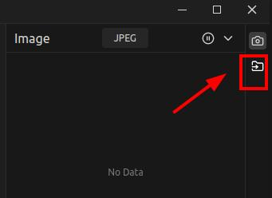
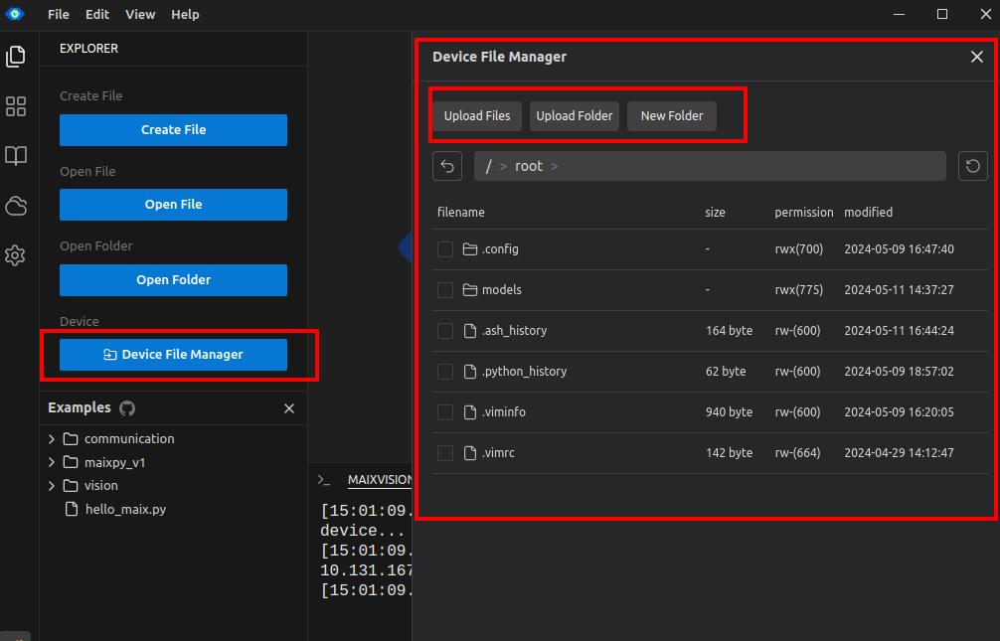

中文
中文MaixVision -- MaixCAM MaixPy 编程 IDE + 图形化积木编程
简介
MaixVision 是专为 Maix 生态打造的一款开发者编程工具，支持 MaixPy 编程和图形化积木编程，同时支持在线运行和调试，以及实时预览图像，可以同步设备显示屏的图像，方便调试和开发。
以及支持打包应用和安装应用到设备，方便用户一键生成、安装应用。
同时还集成一些方便开发的小工具，比如文件管理，阈值编辑器，二维码生成等等。
下载
访问 MaixVision 主页 下载。
使用 MaixPy 编程和在线运行
按照快速开始的步骤连接设备，我们可以很方便地使用 MaixPy 编程和在线运行。
实时预览图像
MaixPy 提供display模块，可以将图像显示到屏幕上，同时，在调用display模块的show方法时，会将图像发送到 MaixVision 显示，比如代码：
from maix import display, camera
cam = camera.Camera(640, 480)
disp = display.Display()
while 1:
disp.show(cam.read())
这里我们用摄像头读取了图像，然后通过disp.show()方法将图像显示到屏幕上，同时也会发送到 MaixVision 显示。
当我们点击了右上角的暂停按钮，就会停止发送图像到 MaixVision 显示。
代码自动补全
代码提示依赖电脑本地的 Python 包，为了实现代码提示，我们需要在电脑中安装 Python，并且安装需要提示的 Python 包。
- 安装 Python 请访问 Python 官网安装。
- 安装需要提示的包，比如对于 MaixPy， 你需要在电脑也安装一份 MaixPy 包，在电脑使用
pip install MaixPy即可安装好，如果MaixPy更新了，你也需要在电脑和设备更新到MaixPy，电脑手动在终端执行pip install MaixPy -U即可，设备更新直接在设置应用中更新即可。
中国国内用户可以使用国内镜像
pip install -i https://pypi.tuna.tsinghua.edu.cn/simple MaixPy。
- 重启 MaixVision 就能够看到代码提示了。
如果仍然不能提示，可以手动在设置中设置 python 可执行文件的路径后重启。
注意在电脑安装 Python 包这里只是为了用作代码提示，实际代码运行还是在设备（开发板）上，设备上也要有对应的包才能正常运行。
另外，虽然你在电脑上安装了 MaixPy 包，但是由于我们精力有限，我们不确保你能直接在电脑的 Python 导入 maix 包进行使用，请在支持的设备上运行。
计算图像的直方图
在上一步中我们可以在 MaixVision 中实时看到图像，我们用鼠标框选一个区域，图像下方就能看到这个区域的直方图了，选择不同的颜色表示方法，可以看到不同的颜色通道的直方图。
这个功能方便我们在做某些图像处理算法时找到一些合适的参数。
区分设备文件系统和电脑文件系统
这里我们有一个比较重要的概念需要掌握：分清楚设备文件系统和电脑文件系统。
- 电脑文件系统：运行在电脑上，在 MaixVision 中打开文件或者工程都是打开的电脑里面的文件，保存也是自动保存到电脑的文件系统。
- 设备文件系统：程序运行时会将程序发送到设备上运行，所以代码里面使用的文件都是从设备文件系统读取。
所以常见的问题是有同学在电脑上保存了文件D:\data\a.jpg，然后在设备上使用这个文件img = image.load("D:\data\a.jpg")，这样当然是找不到文件的，因为设备上没有D:\data\a.jpg这个文件。
具体如何将电脑的文件发送到设备上，参考下面的章节。
传输文件到设备
先连接设备，然后点击浏览设备文件系统的按钮，有两个入口，如下图，然后就能上传文件到设备，或者从设备下载文件到电脑了。


也可以用其它工具代替，点击展开
先知道设备的 ip 地址或者设备名称，MaixVision 就可以搜索到, 或者在设备设置->系统信息中看到，比如类似 maixcam-xxxx.local 或者 192.168.0.123。
用户名和密码都是 root, 使用 SFTP 协议传输文件，端口号是 22。
然后不同系统下都有很多好用的软件：
Windows 下
使用 WinSCP 或者 FileZilla 等工具连接设备，将文件传输到设备上，选择 SFTP 协议填写设备和账号信息连接即可。
具体不懂的可以自行搜索。
Linux 下
终端使用 scp 命令传输文件到设备上，比如：
scp /path/to/your/file.py root@maixcam-xxxx.local:/root
Mac 下
- 方法一：终端使用
scp命令传输文件到设备上，比如：
scp /path/to/your/file.py root@maixcam-xxxx.local:/root
- 方法二：使用 FileZilla 等工具连接设备，将文件传输到设备上，选择
SFTP协议填写设备和账号信息连接即可。
使用图形化积木编程
开发中，敬请期待。